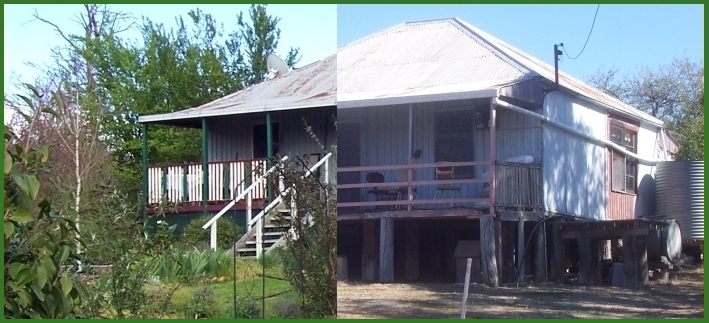

Rye Park - 2007 - 2020
Our house at Rye Park NSW

In August 2007 we bought this old slab cottage on one acre in Rye Park, which is near Boorowa north of Yass. It was pretty run-down, but structurally sound and not in need of any major renovations. We moved there in April 2009, having finally been able to wind up our affairs in Sydney.
show the changes we made to the place before we moved to Bundanoon in 2020.
If you've got a bit of time to spare you could read over some of the old blog:
2019
2018
2017
2016
2015
2014
2013
2012
2011
2010
2009
2008